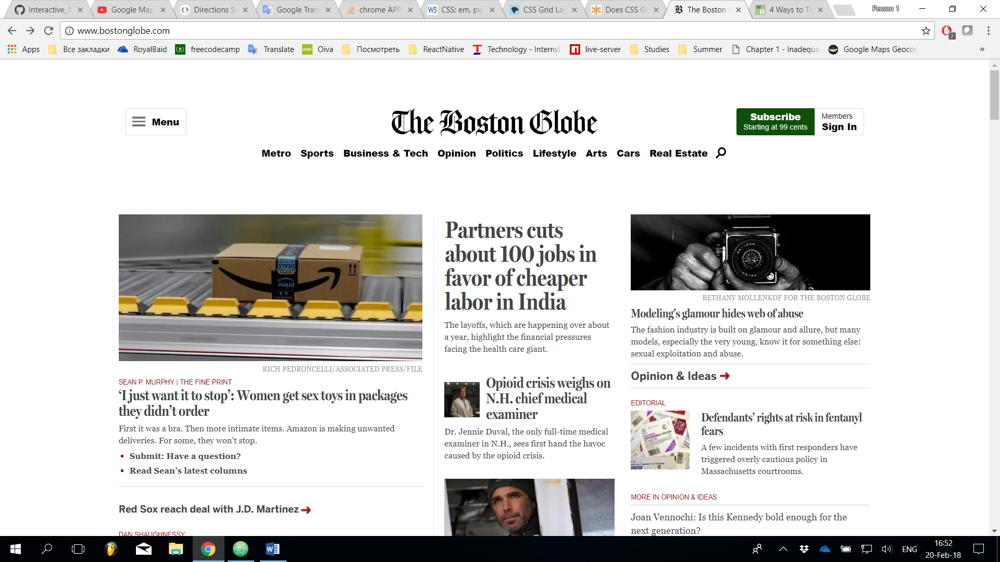
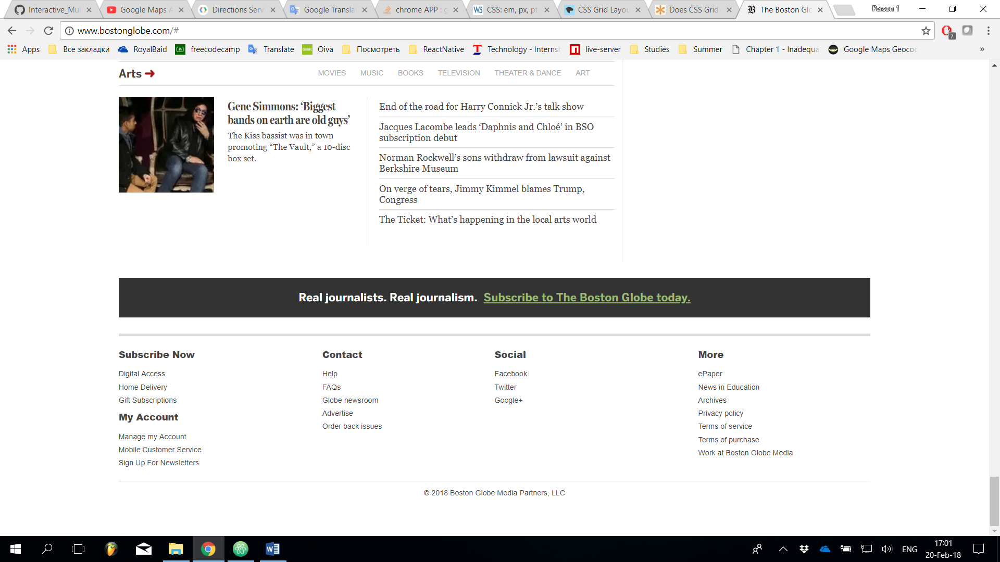
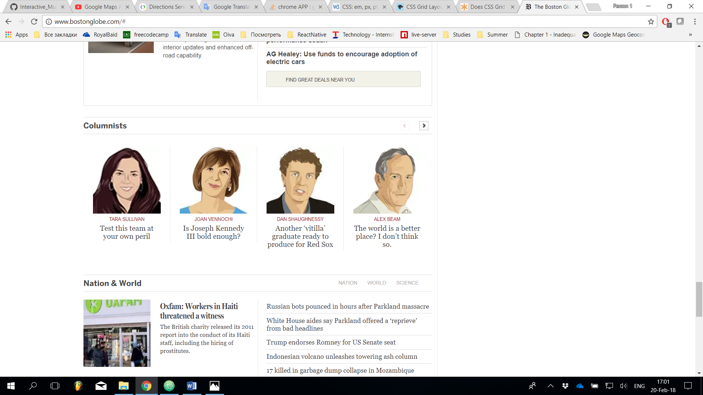

Lab. 2 — Responsive Web Design
RWD
- What is the purpose of RWD? Why it is used? How things were done before RWD? What is the difference?
-
Responsive Web Design (RWD) — is a new approach to designing web pages that lets the code adapt to the needs
of all devices that are commonly used for accessing web services.
Although the main reason for differences among variety of devices and what their web browsers display is the screen size and resolution, there are many outgoing reasons that in general improve user experience.
Before the techniques commonly known as RWD now, there were several methods of making sites mobile-friendly. These include having separate subdomains for mobile version of the site such as 'm' or 'mobile', and adaptive approach which makes design fit the correct device by having a separate style file or even whole page.
RWD is the most practical way of defining site for multiple devices because it focuses on having only one version of the site and achieves it with certain conditions and other methods that react to changes in display's width, height etc. - How CSS media queries can help you building responsive web sites?
- Since CSS2.1 there is a concept of media queries which helps developers define certain pieces of code for various devices. For example, if the page is displayed in web browser the font-family can be more stylish whereas printing the page will change fonts to more readable. Conditions for screen size or resolutions can be combined with device types. link attribute: media="screen and (max-device-width: 480px) and (resolution: 163dpi)" in CSS file @media screen and (max-width: 600px) { ... }
- Why to use em (font) based sizing for margins?
- There are numerous ways of defining the sizes of HTML elements in CSS. They can be grouped to the ones that are coming from traditional printing (pt, pc) and the ones that are used in digital screens (px). To make formatting of documents easier and avoid unnecessary calculations em value is used. It is a relative and variable value that is equal to the font-size of element. If margins/paddings are set with ems and font size is set to default, browsers on desktop and mobile devices will interpret those instructions differently, and the design will still be readable, independent from screen size.
- Article is already 7 years old, do we have any new technologies that can be used to achieve same type of UI responsiveness as described in the article? Buzz words: (CSS Grid, Flexbox)
- Nowadays almost full responsiveness can be reached with plain CSS, thanks to CSS Grid and Flexbox. These techniques are especially useful in hybrid mobile app development. Flexbox is a way of defining relations between multiple containers, setting their directions to be either column or row and defining their size, margins and other properties. CSS Grid is the newest and most powerful solution due to its ability to work in two dimensions defining both rows and columns for elements. Although CSS Grid is more flexible than Flexbox design (what a word play :D), there are some cases where Flexbox would work better (e.g. horizontal menus)
See the Pen Bar Navigation with Flexbox and SVG icons by Chris Coyier (@chriscoyier) on CodePen.
This pencode demonstrates the horizontal footer that is made with. Undoubtedly, flex is extremely suitable for this case
Some RWD Examples



"Boston Globe" tests from desktop


"Boston Globe" tests from mobile
- 1 - Different menus
- 2 - Media queries
- 3 - JS button to scroll
- 4 - Footer
Attachment 1. Responsive web page Click to see result
A simple responsive web page demonstrating using em with CSS3, no pixels
Attachment 2. Responsive web page with menu Click to see result
Using media queries to vary the style of navigation
Attachment 3. Responsive persons list Click to see result
Responsive page from Lab 1. Now container justifies list elements symmetrically for each person name. Colors are picked from Adobe picker